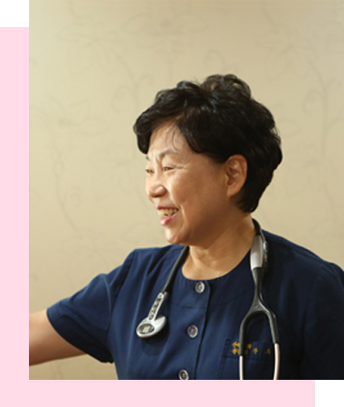
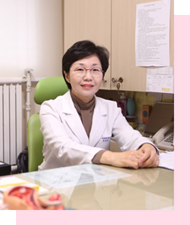
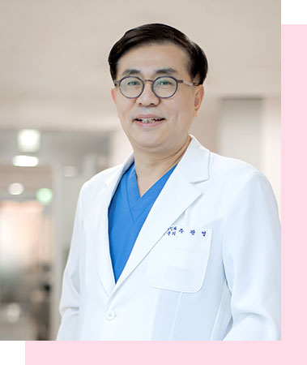
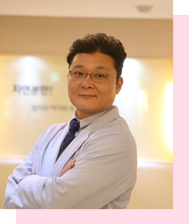

- 장부용 원장
- 김향미 원장
- 최경미 원장
- 주관영 원장
- 박행렬 원장
임신부터 출산까지
10년 이상 여성질환, 여성성형 진료경험과 노하우로여성의 건강과 삶을 위한 의료서비스를 제공합니다.
의료진 소개
은혜산부인과의 의료진을 소개합니다.
의료진의 자세한 약력을 살펴 보실 수 있습니다.
- 
-
장부용 원장
- 현 은혜산부인과 대표원장
- 연세대학교 의과대학 산부인과학교실 외래교수
- 전남의대 졸업
- 자랑스러운 숙명인 상 수상 (60회)
- 서사모아국 국립병원 산부인과장
- 2000년 국내 최초 수중분만 / 국내 최다 수중분만
- 2004년 국내 최고 자연분만율 병원 선정 (심사평가원발표)
/ 국내 최저 제왕절개율 병원 선정 (심사평가원발표) - 005년 서울기독대학교 치유상담 대학원 졸업
/ 서울기독대학교 대학원 신학과 졸업 - 다수 TV 출연
- CBS 새롭게 하소서 2회
- CTS 매일 주와 함께
- KBS 다큐 3일 (개인편) (병원편)
- CGN TV 하늘빛 향기
- CGN TV 인생을 바꾼 한 말씀
- CGN TV 엄마와 아기가 함께 드리는 예배
- MTN 핫이슈 매거진
- 리빙TV 지구촌 요리방
- 
-
김향미 원장
- 이화여자대학교 의과대학 (의학사)
- 이화여자대학교 대학원 (의학박사)
- 노인병인정전문의 (대한노인병학회)
- 서울대학교병원 전임의 (체외수정 및 생식내분비학)
- 이화여자대학교 의과대학 조교수
- Singapore 국립대학교 불임크리닉 연수
- 가천의과대학교 조교수 및 인천 길병원 인공수태연구소 부소장
- 한림대학교 의과대학 부교수대우 및 평촌 성심병원 불임센터 부실장
- 대한산부인과학회 법제위원회 학술간사
- 미래와희망산부인과 원장
- 은혜산부인과 부원장

-
최경미 원장
- 경희대학교 의대 졸업
- 강북삼성병원 산부인과 (전공의)
- 은혜산부인과 진료원장
- 연세대학교 신촌세브란스 산부인과 근무 (전임의 2013.03 ~ 2013.10)
- 미래산부인과 진료원장
- 
-
주관영 원장
전문분야자궁 및 난소종양 / 복강경하 부인과 수술 / 골반장기탈출 / 자궁내막증 / 비정상 자궁경부세포검사관리
- 단국대의대 초빙교수
- 제일병원 부인 종양 일반부인과 전문의
- 제일병원 부인 내시경과 & 부인 비뇨기과 과장 역임
- 국립의료원 전공의
- 중앙대학교 대학원 의학박사
- 카톨릭대학교 졸업
- 대한산부인과 내시경학회 학술위원 역임
- 존슨홉킨스 병원 연수
- 
-
박행렬 원장
- 서울의대 졸업(의학사)
- 중앙대학교의과대학원 졸업(의학박사)
- 아세아연합신학대학원졸업(의료선교학석사)
- 프리덤신학교졸업(선교학박사)
- 한세대학교목회전문대학원 졸업(신학박사)
- 생폴대학교수료(임상목회실습)
- 총신대학교 신학대학원졸업(목회학석사)
- 전주예수병원내과과장
- 서사모아 의료선교사
- 아세아연합신학대학원의료선교학과 교수
- 서울기독대학교상담대학원교수
- 내과전문의
- 척추교정 (카이로프락틱) 시술 (1995부터)